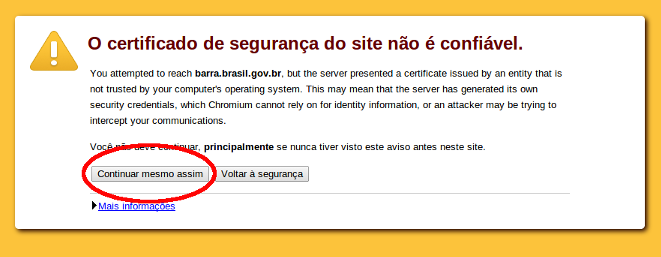

Atualização
Para atualizar a barra é necessário alguns passos:
- Acessar o link da barra de governo;
- Aceitar o certificado conforme imagem abaixo. O certificado do ICP-Brasil é o certificado indicado pelo governo federal mas o mesmo não está instalado por padrão nos navegadores atuais;

→ Seu navegador pode exibir uma tela para aceitação do certificado diferente da imagem acima. - Voltar para a página do governo e recarregar a página para aparecer a nova barra.